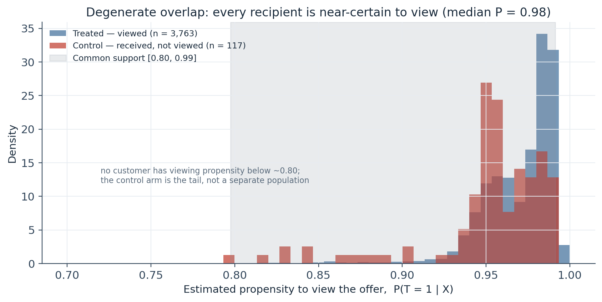
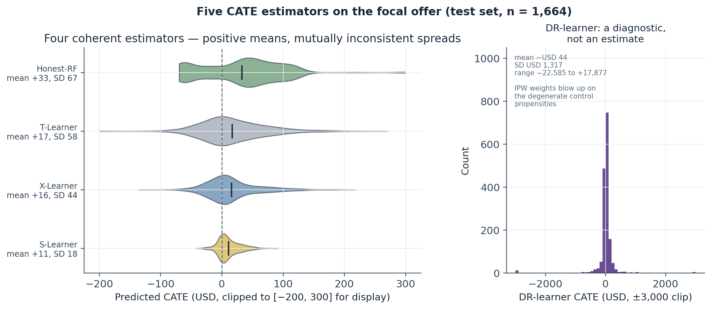
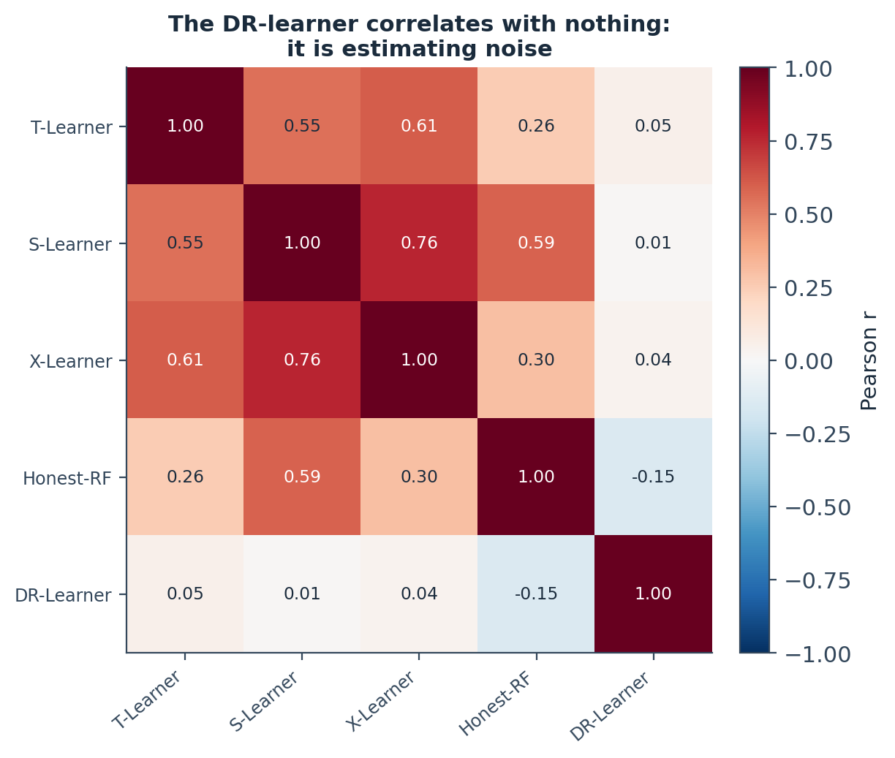
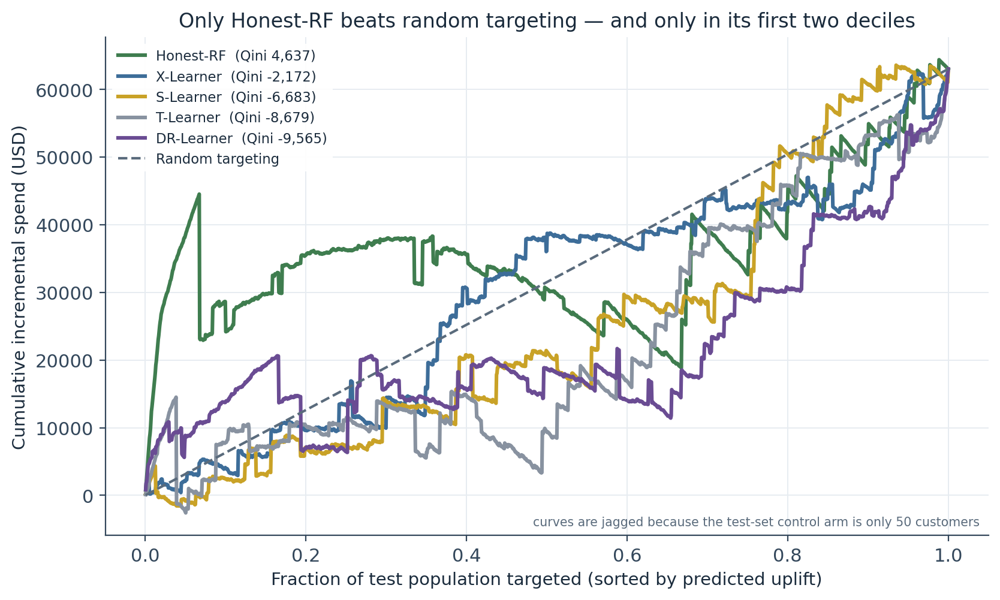
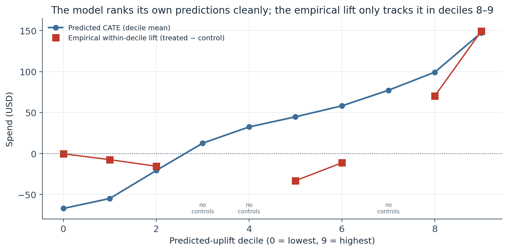
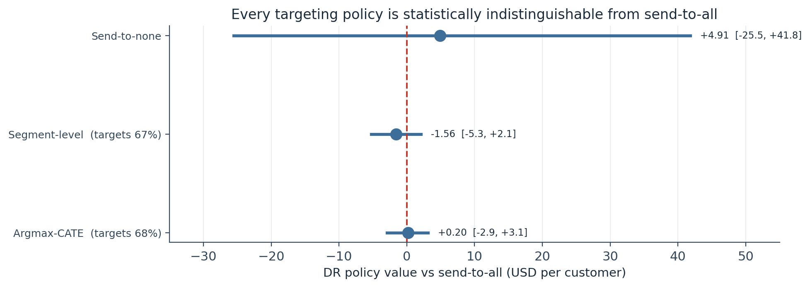
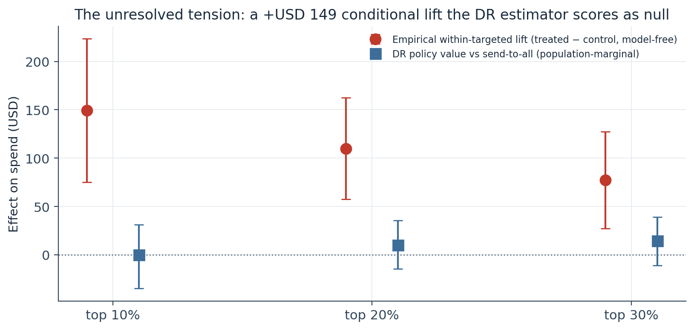
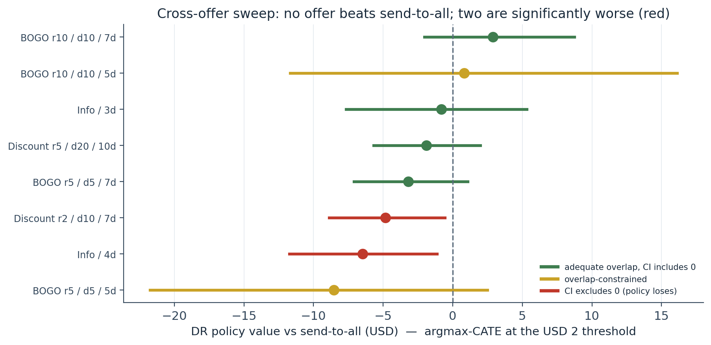

A CATE-Targeting Policy That Does Not Beat Send-to-All: Five Uplift Estimators, a Three-Gate Decision Rule, and the Diagnostics That Say No
The focal offer’s 97% view rate leaves 167 control customers and a propensity distribution with no customer below 0.80 — so the doubly-robust learner blows up (SD USD 1,317), the pseudo-outcome R² is −0.25, the policy-value improvement over send-to-all is +USD 0.20 [−2.81, +3.29], and the E-value is 1.04. All three pre-registered gates fail; the recommendation is a prospective randomised holdout on the top decile.
A pre-registered conditional-average-treatment-effect (CATE) and uplift analysis that returns a disciplined negative result — and is more valuable for it. The substrate problem: the focal discount is viewed by 97% of recipients, leaving 167 control customers (50 in the test set) and a propensity distribution where every recipient has P(view | X) > 0.80. Five estimators: T/S/X-learners and an honest random forest produce coherent but mutually inconsistent CATE distributions (means USD 11–33); the doubly-robust learner blows up (SD USD 1,317, range −22,585 to +17,877, correlation with every other estimator below 0.06). The decision rule fails all three gates: the argmax-CATE policy improves DR policy value over send-to-all by +USD 0.20 (95% CI [−2.81, +3.29]), the DR pseudo-outcome out-of-fold R² is −0.25, and the E-value is 1.04 against a 1.25 threshold. An unresolved tension: a model-free empirical lift of +USD 149 in the top predicted decile (CI excludes zero) that the DR estimator scores as null — resolvable only by a prospective randomised holdout (~45 customers per arm). A counter-example: a naive “no-offer” control (n = 5) produces an illusory +USD 277 policy uplift — the failure this pipeline is built to catch.
conditional average treatment effect, CATE, uplift modelling, meta-learners, doubly robust learner, causal forest, Qini curve, policy value, propensity overlap, positivity, E-value, negative result, Starbucks capstone, Python, scikit-learn
Abstract
This study asks whether a per-customer targeting policy, built from an estimated conditional average treatment effect (CATE), can beat a send-to-all baseline on the focal discount offer from the project’s promotions rollout — and returns a pre-registered negative answer. The identification frame is inherited from the quasi-experimental study: treatment is viewing the offer, control is receiving without viewing, and the outcome is customer-level 30-day spend. The problem is the substrate: the offer’s 97% view rate leaves only 167 control customers (50 in the held-out test set), and the estimated propensity to view has no customer below 0.80 and a median of 0.98 — a violation of the overlap condition that CATE estimation depends on. Five estimators are fitted side by side. The T-, S-, and X-learners and an honest random forest produce coherent CATE distributions with positive means (USD 10.89–32.98) but standard deviations that disagree by a factor of four; the cross-fitted doubly-robust learner blows up (mean −USD 44, SD USD 1,317, range −22,585 to +17,877) and correlates with every other estimator below 0.06 — the predictable failure of inverse-propensity weighting when overlap is inadequate. A pre-registered three-gate decision rule fails on all three gates: the argmax-CATE policy improves DR policy value over send-to-all by +USD 0.20 (95% CI [−2.81, +3.29]), the DR pseudo-outcome out-of-fold R² is −0.25 (the CATE surface fits worse than its own mean), and the E-value on the policy-value improvement is 1.04 against a moderate-robustness threshold of 1.25. Sensitivity across propensity trimming, seven treatment-window definitions, and all 10 catalogue offers is uniformly null; two offers show the targeting policy significantly underperforming send-to-all. One tension remains: a model-free empirical lift of +USD 149 among the top predicted decile (CI [+75, +223]) that the DR estimator scores as null — a disagreement between a conditional and a marginal estimand that only a prospective randomised holdout (~45 customers per arm) can resolve. A preserved counter-example — defining control as customers who received no offers at all (n = 5) — produces an illusory +USD 277 policy uplift, which is the identification failure this pipeline is built to catch.
Keywords: conditional average treatment effect, uplift modelling, meta-learners, doubly robust learner, Qini curve, policy value, propensity overlap, positivity, E-value, negative result
Introduction
The previous study recovered per-offer differential effects and a compliance-weighted local effect of viewing. This one asks the higher-value question — for whom does the offer work best — and whether that heterogeneity supports a targeting policy that sends the offer only where it pays. If a CATE surface can rank customers by treatment response, a policy that treats the high responders and spares the rest should beat treating everyone.
The honest answer on this offer is no, and the reason is worth stating plainly before any model is fitted. CATE estimation needs overlap: for the covariate values where a policy might withhold treatment, there must be both treated and untreated customers to compare. The focal offer is viewed by 97% of the customers who receive it, so the untreated group is tiny (167 customers) and — as the propensity diagnostic will show — it is not a distinct population but the thin tail of a near-deterministic viewing process. Every downstream estimate inherits that scarcity.
The analysis is pre-registered: the estimands, the four candidate policies, and a three-gate decision rule for recommending rollout are fixed in advance (Table 1). The finding is that the decision rule fails cleanly on every gate. The value of the piece is the discipline that produces a defensible “no” rather than a confounded “yes” — and a preserved counter-example, kept verbatim, showing exactly what the confounded “yes” looks like.
Method
Data and identification frame
The analysis frame is one row per customer who received the focal offer and has complete demographics: 5,544 customers, of whom 5,377 (97.0%) viewed at least one instance (treated) and 167 (3.0%) did not (control). The outcome is customer-level 30-day total spend (mean USD 127.26, SD USD 138.21) — deliberately total spend rather than offer-attributed spend, because attributed spend is zero by construction when the offer was not viewed, which would make any CATE-argmax policy mechanically prefer viewing-prone customers. Covariates: age, income, membership tenure, gender (one-hot), and the pre-period engagement segment from the segmentation study (one-hot, including an explicit stratum for unsegmented customers). A 70/30 train/test split stratified on treatment gives 117 control customers in training and 50 in the test set — the binding constraint on every interval that follows.
Pre-registered estimands and decision rule
Table 1
Pre-Registered Estimands, Policies, and the Three-Gate Decision Rule
| Element | Specification |
|---|---|
| Primary estimand | Per-customer CATE, τ(X) = E[Y(1) − Y(0) | X], under selection-on-observables |
| Secondary estimand | Targeting-policy value V(π) = E[Y(π(X))], estimated by IPW and doubly-robust (DR) |
| Candidate policies | Send-to-all · send-to-none · argmax-CATE (CATE > USD 2 reward cost) · segment-level |
| Gate (a) | DR ΔV for argmax-CATE exceeds the bootstrap 95% CI width on the difference |
| Gate (b) | The best-Qini estimator’s out-of-fold pseudo-outcome R² > 0 |
| Gate (c) | E-value on the policy-value improvement > 1.25 (moderate robustness) |
| Recommend rollout | Only if gates (a), (b), and (c) all hold |
| Guardrail | Association between the policy’s targeting decision and each customer’s prior most-viewed offer type (χ²) |
Note. All three gates must pass jointly. The E-value re-uses the VanderWeele–Ding continuous-outcome approximation, applied here to the policy-value difference rather than a point ATE.
CATE estimators
Five, fitted on the same training split and predicted on the same test set: a T-learner (two gradient-boosted outcome models, difference of predictions), an S-learner (one model over [X, T]), an X-learner (cross-imputed effects blended by propensity), an honest random-forest approximation (double-sample split, averaged T-learners), and a cross-fitted doubly-robust (DR) learner (5-fold AIPW pseudo-outcomes, final regression on the pooled pseudo-outcomes). The DR-learner is the theoretically preferred choice; it is included partly to demonstrate what it does when its inverse-propensity term meets a degenerate propensity distribution.
Policy-value estimation
Each policy’s value is estimated by an inverse-propensity-weighted (IPW) estimator and a doubly-robust estimator, with nuisance models refit on the full training split. Confidence intervals on the difference between each policy and send-to-all come from a 500-sample paired bootstrap of the test set — the paired difference, not two overlapping absolute intervals, is what makes a null readable.
Sensitivity
Three probes: a VanderWeele–Ding E-value on the DR policy-value improvement; a propensity-trimming sweep (symmetric trims from 0% to 20%); and a treatment-window sweep across seven definitions of “viewed” (view-latency cutoffs from 24 h to 240 h, plus a stricter viewed-then-completed criterion). A cross-offer sweep runs the whole pipeline against all 10 catalogue offers.
Software
Python 3.10 with scikit-learn (GradientBoostingRegressor, RandomForestRegressor, LogisticRegression, KFold), numpy, and matplotlib. Estimator training is seeded; the DR-learner’s noise-dominated diagnostics (its mean, SD, Qini, and R²) vary at the ±5% level across runs because the cross-fitted pseudo-outcome has an SD near USD 2,000 — which is itself part of the finding.
Results
Propensity overlap is degenerate
The logistic propensity model estimates P(view | X) with a median of 0.977 on training and 0.978 on test. The treated arm’s 5th percentile is 0.937; the control arm’s 95th percentile is 0.988. The common-support band is [0.80, 0.99], nominally covering 94% of rows — but the entire band sits in the top fifth of the probability scale, and no customer has a viewing propensity below about 0.80 (Figure 1). The observed control arm is not a separate population; it is the tail of a near-deterministic viewing process. Any estimator that leans on the propensity score — the X-learner’s blending step, the DR-learner’s inverse-propensity correction — is extrapolating from a narrow strip, not interpolating across a well-overlapped joint distribution.
Figure 1
Estimated Viewing Propensity by Arm — Training Set

Note. Positivity (overlap) is a necessary condition for CATE identification. Here it is technically satisfied over a narrow band and substantively degenerate.
The five estimators disagree, and one blows up
The T-, S-, and X-learners and the honest random forest all return coherent CATE distributions with positive means — USD 10.89 (S), USD 15.91 (X), USD 16.62 (T), USD 32.98 (RF) — but standard deviations from USD 18 to USD 67, a fourfold disagreement about how much heterogeneity exists (Figure 2, Table 2). The S-learner’s narrow spread is its known shrinkage behaviour on small-effect problems; the others are freer to disagree with the pooled mean and extend into negative CATE territory.
The DR-learner is the outlier, in a way that is diagnostic rather than incidental. Its mean CATE is −USD 44, its standard deviation is USD 1,317, and its range spans −22,585 to +17,877. With control propensities in [0.93, 0.99], the inverse-propensity weights on control rows — 1/(1 − e) — run from 15 to 100, so a single control customer with an outlier outcome contributes thousands of dollars to its fold’s pseudo-outcome. Cross-fitting distributes the problem rather than fixing it. The cross-estimator correlation matrix confirms the diagnosis: the DR-learner correlates with every other surface below 0.06 in absolute value, while the T/S/X block correlates 0.55–0.76 internally (Figure 3). A five-model ensemble in which one model is uncorrelated with the rest is a four-model ensemble plus a warning light.
Figure 2
Predicted CATE Distributions — Five Estimators, Test Set

Note. Left panel clipped to [−200, 300] for display; right panel clipped to ±3,000. The DR-learner is shown as a diagnostic, not an estimate.
Figure 3
Cross-Estimator Correlation of Predicted CATE

Note. Moderate mutual correlation among the four coherent estimators; the DR-learner is uncorrelated with all of them.
Table 2
CATE Summary and Qini Coefficient by Estimator (test set, n = 1,664)
| Estimator | Mean | SD | p5 | p50 | p95 | Qini coefficient |
|---|---|---|---|---|---|---|
| S-learner | USD 10.89 | 18.0 | −13.4 | 6.9 | 45.8 | −6,683 |
| X-learner | USD 15.91 | 44.1 | −40.2 | 7.8 | 102.3 | −2,172 |
| T-learner | USD 16.62 | 58.2 | −57.8 | 10.0 | 116.2 | −8,679 |
| Honest random forest | USD 32.98 | 67.3 | −67.3 | 38.7 | 120.3 | +4,637 |
| DR-learner | −USD 44 | 1,317 | −264 | 14.3 | 274 | −9,565 |
Note. Qini coefficient = area between the model’s Qini curve and the random-targeting diagonal; positive means the ranking concentrates incremental spend at the top. Only the honest random forest is positive.
Qini and uplift deciles: skill only at the extreme top
On a Qini benchmark, four of the five estimators sit below the random-targeting diagonal — their rankings place high-scoring customers where the model should place low-scoring ones (Figure 4). Only the honest random forest is meaningfully above it, with a Qini coefficient of +4,637; its curve rises sharply in the first 10% of the population, then plateaus with little ordering information through the middle. The curves are visibly jagged because each of the 50 test-set control customers moves the Qini numerator by a large amount.
Bucketing the test set into deciles by the random forest’s predicted CATE, the model orders its own predictions monotonically from −USD 67 (decile 0) to +USD 147 (decile 9) — trivially, by construction. The empirical within-decile lift (treated mean minus control mean) is estimable only where a decile has at least five control customers, and where it is estimable it is noise through deciles 0–6 (−USD 15, −USD 33, −USD 11 in the observable middle deciles) and only tracks the prediction in the top two: +USD 70 in decile 8 and +USD 149 in decile 9, closely matching predictions of +USD 99 and +USD 147 (Figure 5). Whatever skill the model has is concentrated in the top fifth of its predicted distribution.
Figure 4
Qini Curves — Five CATE Estimators vs Random Targeting

Note. Jaggedness is an artefact of the 50-customer test-set control arm.
Figure 5
Predicted vs Empirical Within-Decile Lift — Honest Random Forest

Note. Deciles 3, 4, 7 have four, two, and zero control customers and cannot produce an empirical estimate.
The targeting policy does not beat send-to-all
The argmax-CATE policy (random forest CATE above the USD 2 reward cost) targets 67.8% of the test set; the segment-level policy targets 67.3% (segments 0, 1, 4, whose training-set mean CATE exceeded USD 2). Every non-trivial policy lands in the USD 126–129 range on DR policy value against a level of USD 128 (Table 3). The paired-bootstrap difference is where the decision rule resolves: argmax-CATE improves DR policy value over send-to-all by +USD 0.20, with a 95% CI of [−2.81, +3.29] — an interval more than 30 times the width of the point estimate. The segment policy is −USD 1.56 [−5.34, +2.22]. IPW and DR agree on the null (Figure 6).
Figure 6
DR Policy Value vs Send-to-All, with 95% Bootstrap CIs

Note. The send-to-none interval is wide because its value leans entirely on the outcome model μ₀, trained on 117 control customers.
Table 3
Policy Value (IPW and DR) and Difference vs Send-to-All
| Policy | Coverage | V (IPW) | V (DR) | ΔV (DR) vs send-to-all | 95% CI |
|---|---|---|---|---|---|
| Send-to-all | 100% | 128.59 | 128.18 | — | — |
| Argmax-CATE | 67.8% | 128.14 | 128.38 | +0.20 | [−2.81, +3.29] |
| Segment-level | 67.3% | 126.73 | 126.62 | −1.56 | [−5.34, +2.22] |
| Send-to-none | 0% | 156.91 | 133.09 | +4.91 | [−27.67, +38.86] |
Note. All values in USD per customer. No policy’s ΔV interval excludes zero.
Against the three gates
All three pre-registered gates fail (Table 1). Gate (a): the argmax-CATE ΔV of +USD 0.20 does not exceed the bootstrap CI width of USD 6.10 — it is smaller by more than an order of magnitude. Gate (b): the DR-learner’s out-of-fold pseudo-outcome R² is −0.25 — the CATE surface fits the cross-fitted pseudo-outcomes worse than their unconditional mean, so it has not learned recoverable heterogeneity. Gate (c): the E-value on the +USD 0.20 improvement is 1.04 (the CI-low maps to the null floor of 1.00), against a 1.25 threshold — an unmeasured confounder with a 1.04× association with both viewing and spending would erase the apparent advantage. The recommendation is to continue send-to-all for the focal offer.
One tension the analysis cannot resolve
A top-K% policy family — treat only the highest-scoring K% — surfaces a signal the argmax-at-threshold policy dilutes. The model-free empirical within-targeted lift (treated minus control spend, among the customers each policy selects) is +USD 149 at top-10% (95% CI [+75, +223]), +USD 110 at top-20% ([+58, +162]), and +USD 77 at top-30% ([+27, +127]) — all with intervals excluding zero, and the top-10% figure reproducing decile 9’s number exactly. The DR policy-value difference for the same policies is null everywhere: −USD 0.03 at top-10%, +USD 10.23 at top-20%, +USD 14.37 at top-30%, all CIs straddling zero (Figure 7).
The two estimators answer different questions. The empirical lift is conditional — “given that the policy selects this customer, what is the treated-minus-control gap?” — and is vulnerable to selection on observables: the customers the model ranks highest may have high baseline spend regardless of viewing. The DR policy value is marginal — “if the policy ran on the whole population, what would average spend be?” — and defaults toward the send-to-all reference when its outcome models cannot fit the top-decile tail. Both mechanisms are operating, and the top-10% empirical interval rests on five control customers, too few to distinguish them. The analysis names the ambiguity rather than resolving it.
Figure 7
The Unresolved Disagreement — Empirical Conditional Lift vs DR Marginal Policy Value

Note. A conditional estimand that excludes zero and a marginal estimand that includes it, on the same policy and the same data.
Sensitivity is uniformly null
The E-value is at the null floor (1.04 point, 1.00 at the CI-low). The propensity-trimming sweep holds ΔV_DR flat between −USD 1.42 and +USD 0.59 across trims from 0% to 20%, every interval crossing zero — the null is not an artefact of any particular overlap region. The seven-variant treatment-window sweep produces a negative pseudo-outcome R² under every definition tested (from −0.13 at a 24-hour view cutoff to −0.64 at 168 hours), including the two variants that achieve genuinely balanced arms and adequate overlap — so the null is not an artefact of the 10-day window or the thin control arm either. And the cross-offer sweep across all 10 catalogue offers finds no offer with a positive ΔV_DR whose CI excludes zero; two offers show the argmax-CATE policy significantly underperforming send-to-all (Figure 8). The focal offer and one sibling discount are sample-constrained (fewer than 200 control customers) at their 96–97% view rates and cannot produce a point estimate at all.
Figure 8
Cross-Offer Applicability Sweep — DR Policy Value vs Send-to-All

Note. Green = adequate overlap; gold = overlap-constrained; red = interval excludes zero (the policy loses). Two offers are omitted as sample-constrained.
The counter-example, preserved
An earlier draft of this analysis defined control as customers who received no offers at all — the naive reading of “untreated”. That group has five customers (three after the training split). On that substrate the same pipeline reports an argmax-CATE policy uplift of +USD 277 (+0.2%) over send-to-all — a number a business would read as a modest positive. It is an identification artefact: with three control customers, the outcome model μ₀ is a near-constant, so the CATE surface is a spend-ranking model that assigns almost every customer a positive score, and the “uplift” is the mechanical consequence. The disciplined analysis and the naive one differ by a control-arm definition; the difference between a defensible null and a confounded positive is entirely in that choice.
Discussion
The value of the negative result
The pipeline did its job: it produced a pre-registered “no” backed by five estimators, a Qini comparison, a three-gate decision rule, and sensitivity across trimming, treatment definitions, and the whole catalogue — and it exposed the confounded “yes” that a naive control arm would have delivered. False positives in targeting scale linearly in cost across a catalogue of decisions; a single catch of a confounded positive is worth more than a single true positive. The revenue number this study produces is zero, but the deliverable is the discipline for knowing when a CATE-driven policy is ready for a substrate and when it is not.
Why the substrate defeats the method
CATE estimation and policy learning both require overlap — treated and untreated customers at the same covariate values — and the focal offer does not supply it. The 97% view rate is a success of the delivery channel and a failure for causal identification: there is almost no one who received the offer and plausibly could have gone either way on viewing it. Every symptom downstream — the DR-learner’s variance explosion, the negative pseudo-R², the null policy value, the wide bootstrap intervals — traces to that single fact, and the treatment-window sweep confirms it is not fixable by redefining “viewed”.
What would resolve the top-decile tension
The +USD 149 empirical top-decile lift and the DR null are not contradictory; they are a conditional and a marginal estimand disagreeing, with selection-on-observables and outcome-model smoothing both plausible explanations and neither testable at n = 5 controls. A prospective randomised holdout within the top decile resolves it by construction: score a future rollout with the random forest, rank customers, and within the top 10% randomise a small fraction to a no-offer control. Randomisation inside the slice removes the selection interpretation and gives an unbiased estimate the current estimators cannot. At a conservative target effect of +USD 75 (the empirical CI lower bound) against an outcome SD near USD 140, the design needs roughly 45 customers per arm at α = 0.05 one-sided, 80% power — feasible within one observation window.
Limitations
The CATE identification assumption — that age, income, tenure, and pre-period segment block all confounding between viewing and spending — is untestable and, given the overlap diagnostic, weakly supported. The 50-customer test-set control arm makes every interval wide, and the DR-learner’s noise-dominated diagnostics vary at the ±5% level across runs. The segment used for stratification was fit on the full 30-day window; it is leakage-free here only because its features are not post-treatment. The 30-day horizon measures short-run lift per exposure, not lifetime value. And the analysis is single-offer: the cross-offer sweep shows the null generalises across the catalogue’s argmax-at-threshold policies, but the top-decile refinement is specific to the focal offer and would need its own validation.
Conclusion
On the pre-registered decision rule, the CATE targeting policy for the focal offer fails all three gates and the recommendation is to continue send-to-all. The catalogue-wide sweep, the trimming sweep, and the treatment-window sweep all confirm the null. The one live question — whether the top-decile empirical lift is real — cannot be answered observationally at this sample size and is handed forward as a specific, small, feasible randomised test. The infrastructure investments that would lift these constraints are named: a randomised-holdout convention on a fraction of every rollout, and a pre-period capture that would enable variance reduction. The pipeline is the deliverable; the dollar figure is the next study.
References
Athey, S., & Wager, S. (2021). Policy learning with observational data. Econometrica, 89(1), 133–161. https://doi.org/10.3982/ECTA15732
Chernozhukov, V., Chetverikov, D., Demirer, M., Duflo, E., Hansen, C., Newey, W., & Robins, J. (2018). Double/debiased machine learning for treatment and structural parameters. The Econometrics Journal, 21(1), C1–C68. https://doi.org/10.1111/ectj.12097
Künzel, S. R., Sekhon, J. S., Bickel, P. J., & Yu, B. (2019). Metalearners for estimating heterogeneous treatment effects using machine learning. Proceedings of the National Academy of Sciences, 116(10), 4156–4165. https://doi.org/10.1073/pnas.1804597116
Pedregosa, F., Varoquaux, G., Gramfort, A., Michel, V., Thirion, B., Grisel, O., Blondel, M., Prettenhofer, P., Weiss, R., Dubourg, V., Vanderplas, J., Passos, A., Cournapeau, D., Brucher, M., Perrot, M., & Duchesnay, É. (2011). Scikit-learn: Machine learning in Python. Journal of Machine Learning Research, 12, 2825–2830.
Radcliffe, N. J. (2007). Using control groups to target on predicted lift: Building and assessing uplift models. Direct Marketing Analytics Journal, 14–21.
Rosenbaum, P. R., & Rubin, D. B. (1983). The central role of the propensity score in observational studies for causal effects. Biometrika, 70(1), 41–55. https://doi.org/10.1093/biomet/70.1.41
VanderWeele, T. J., & Ding, P. (2017). Sensitivity analysis in observational research: Introducing the E-value. Annals of Internal Medicine, 167(4), 268–274. https://doi.org/10.7326/M16-2607
Wager, S., & Athey, S. (2018). Estimation and inference of heterogeneous treatment effects using random forests. Journal of the American Statistical Association, 113(523), 1228–1242. https://doi.org/10.1080/01621459.2017.1319839
Starbucks, & Udacity. (2018). Starbucks Capstone Challenge simulated offers dataset [Data set]. Retrieved from Kaggle (I. Muliar, mirror). https://www.kaggle.com/datasets/ihormuliar/starbucks-customer-data
Observational CATE study, pre-registered, returning a negative result. The targeting policy fails all three decision gates; the reported empirical top-decile lift rests on five control customers and is not causally confirmed. Estimator training is seeded; the DR-learner’s noise-dominated diagnostics vary modestly across runs, which is part of the finding. Every figure and number was regenerated from the Gold tables.